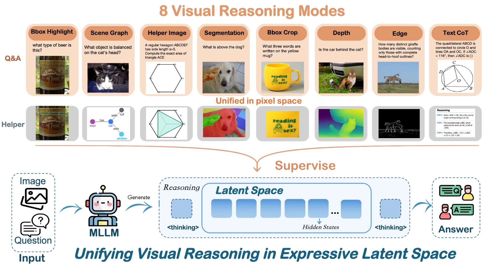
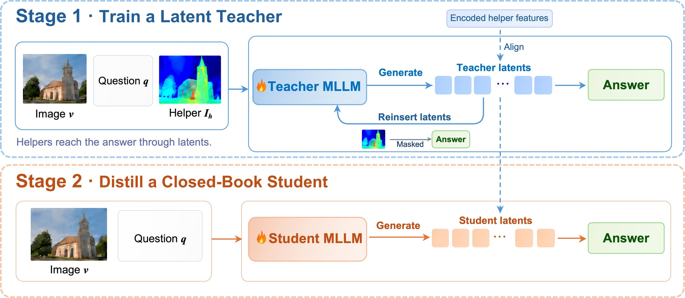
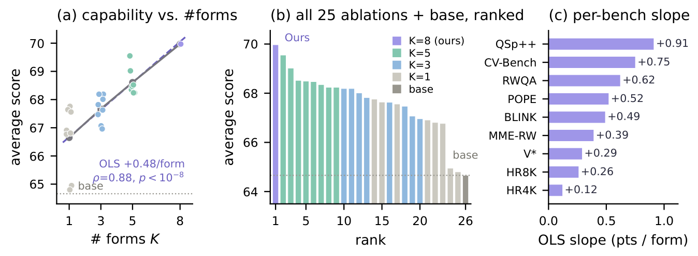
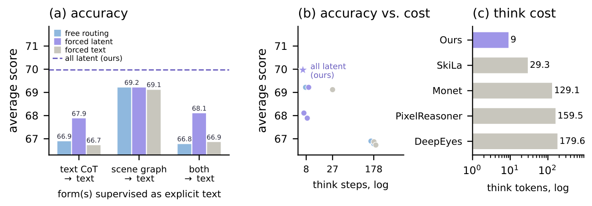
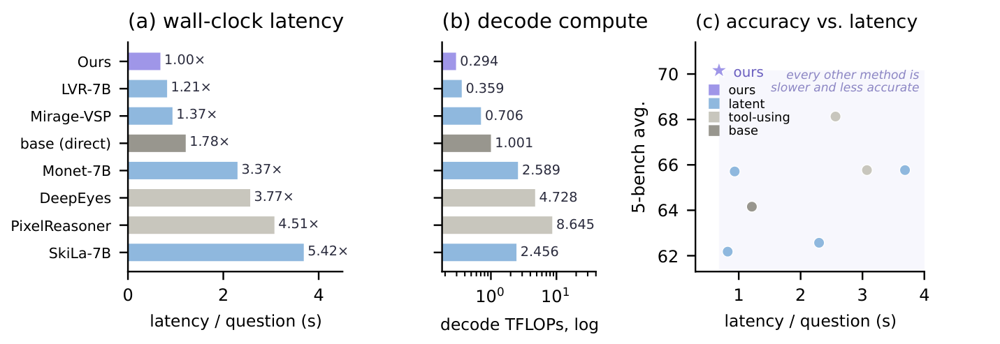
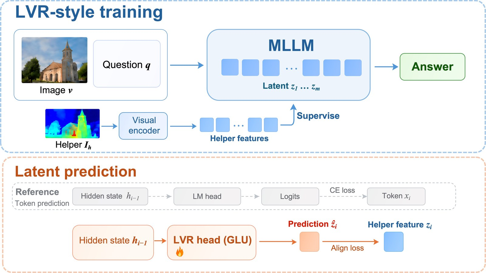

HVLR
Unifying Heterogeneous Visual Reasoning
in Expressive Latent Space
Example Video
Overview

Abstract
Visual reasoning increasingly relies on heterogeneous intermediate representations, including textual rationales, regions, scene graphs, segmentation, depth, and visual manipulations. Because these representations differ substantially in structure and modality, they are typically modeled with separate reasoning interfaces, which scale poorly as more reasoning forms are incorporated. This raises a fundamental question: can heterogeneous forms of visual reasoning be unified in a single shared latent space? We investigate this question through HVLR (Heterogeneous Visual Latent Reasoning), which unifies eight distinct reasoning forms within a common autoregressive latent interface. To reconcile heterogeneous supervision, we first render all reasoning representations into a shared pixel space and encode them with the same vision encoder. We then use a two-stage distillation procedure to translate these representations into autoregressive latent states and internalize them into a closed-book model that requires no explicit intermediate representation at inference time. We conduct a systematic analysis with HVLR and uncovers three main findings. First, heterogeneous reasoning forms can be effectively unified: combining all eight improves Qwen2.5-VL-7B from 64.66% to 69.97% average accuracy across nine benchmarks. Second, the shared latent space consistently benefits from reasoning diversity. Under a fixed 40K-example budget, increasing the number of reasoning forms from 1 to 3, 5, and 8 improves performance from 66.65% to 67.67%, 68.61%, and 69.97%, respectively, with positive trends across all nine benchmarks. Third, latent reasoning outperforms explicit intermediate decoding while reducing intermediate computation from roughly 177 generated tokens to only 8 latent steps, suggesting that continuous latent representations provide a more expressive and efficient medium for heterogeneous visual reasoning.
Introduction
Visual reasoning has been approached through increasingly diverse intermediate representations: textual chains of thought, region crops, scene graphs, segmentation and depth maps, and visual manipulations. These forms capture complementary aspects of reasoning, yet because their structures differ so much they are usually modeled separately, each with its own prediction head, decoder or specialized system, which scales poorly as more forms are added. We ask whether heterogeneous forms of visual reasoning can instead be unified in a single shared latent space. HVLR does this in two steps. It first renders every reasoning form into a common pixel space and encodes it with the same vision encoder, giving all eight forms one supervision interface without dedicated heads. It then uses a two-stage distillation procedure, a latent teacher followed by a closed-book student, to turn that supervision into autoregressive latent states the model generates by itself, so no explicit intermediate representation is needed at inference. The resulting model improves Qwen2.5-VL-7B from 64.66 to 69.97 average accuracy over nine benchmarks, grows stronger as more reasoning forms share the same data budget, and reasons in 8 latent steps instead of roughly 177 decoded tokens.
Method
Unified Pixel-Space Supervision
HVLR collects eight representative reasoning forms and rasterizes each of them into a helper image that is processed by the same vision encoder, so linguistic, symbolic, spatial and perceptual reasoning signals can all supervise the same latent space. Interleaved reasoning (labelled "Helper Image" in the overview figure) contributes one to three intermediate images. After curation the corpus contains 1.31M examples; unless otherwise specified, all experiments use the same balanced 40K subset with 5K examples per form.
Two-Stage Latent Distillation

Stage 1
Latent Teacher
The teacher reads the helper images and autoregressively generates a block of L = 8 latent slots per helper, each reusing the previous last-layer hidden state as its next input embedding. The slots are then re-inserted while an attention mask stops the answer from attending to the helpers, so helper information must flow through the latents. A cosine alignment loss ties the latent states to the frozen base model's features of the same helpers.
Stage 2
Closed-Book Student
The helpers are removed. A student initialized from the base model learns to regenerate the Stage-1 latent states from the original image and question alone, aligned layer by layer to the frozen teacher's states. At inference it receives only the image and question, generates the latent reasoning states, and decodes the answer: no helper image, rationale text or reasoning decoder is needed.
Experiment Results
Main Results
Scores (%) on nine benchmarks (POPE is F1; QSpatial++ is the success rate within a factor of two). Bold = best per column among same-protocol rows. Frontier-model rows (gray, ‡) are reported numbers taken from published papers.
| Model | V⋆ | HR4K | HR8K | MME-RW | BLINK | POPE | RWQA | CV-B | QSp++ | Avg. |
|---|---|---|---|---|---|---|---|---|---|---|
| base (Qwen2.5-VL-7B) | 75.92 | 68.88 | 65.25 | 45.49 | 55.65 | 86.58 | 69.15 | 73.40 | 41.58 | 64.66 |
| Latent Reasoning | ||||||||||
| Monet-7B | 80.85 | 70.38 | 68.88 | 47.06 | 41.56 | 87.75 | 61.05 | 51.64 | 31.68 | 60.09 |
| LVR-7B | 81.18 | 70.75 | 66.12 | 49.56 | 53.45 | 84.76 | 68.10 | 75.09 | 24.75 | 63.75 |
| CoVT-7B | 78.53 | 71.00 | 69.50 | 50.34 | 56.35 | 84.58 | 70.07 | 78.75 | 53.47 | 68.07 |
| SkiLa-7B | 82.72 | 71.12 | 64.50 | 46.74 | 54.87 | 87.39 | 69.93 | 76.19 | 40.59 | 66.01 |
| Mirage-VSP | 79.06 | 70.12 | 66.88 | 48.31 | 56.78 | 85.29 | 69.93 | 75.07 | 42.57 | 66.00 |
| Open-source VLM | ||||||||||
| InternVL3-8B | 70.16 | 69.00 | 59.00 | 47.68 | 55.18 | 89.00 | 70.07 | 80.98 | 53.47 | 66.06 |
| LLaVA-OneVision-7B | 72.25 | 65.12 | 58.13 | 48.41 | 50.55 | 88.20 | 70.07 | 76.32 | 51.49 | 64.50 |
| Tool Using | ||||||||||
| DeepEyes-7B | 82.20 | 73.62 | 70.88 | 52.42 | 44.29 | 87.74 | 69.41 | 78.59 | 44.55 | 67.08 |
| PixelReasoner-7B | 78.53 | 70.62 | 64.50 | 45.75 | 45.08 | 85.97 | 69.67 | 79.09 | 45.54 | 64.97 |
| Frontier Closed-Source Models | ||||||||||
| GPT-5‡ | 74.87 | 74.6 | 71.62 | 57.0 | 71.0 | — | 82.8 | — | 63.37 | — |
| GPT-4o‡ | 62.8 | 68.0 | 63.9 | 51.6 | 60.0 | 86.9 | 75.4 | 79.4 | 61.06 | — |
| Gemini-2.5-Pro‡ | 79.2 | 87.3 | 83.62 | 58.30 | 70.6 | — | 78.0 | 86.3 | 40.59 | — |
| HVLR (Ours) | 81.70 | 71.75 | 70.88 | 54.30 | 56.85 | 89.19 | 72.03 | 78.53 | 54.46 | 69.97 |
| Δ vs. base | +5.78 | +2.87 | +5.63 | +8.81 | +1.20 | +2.61 | +2.88 | +5.13 | +12.88 | +5.31 |
HVLR improves on its base and attains the highest average score among all same-protocol rows, +1.9 above the best latent-reasoning baseline (CoVT-7B). It also exceeds the best tool-using agent, DeepEyes, with a single closed-book pass instead of a multi-pass zoom-in loop.
Finding ❶
More Forms, Stronger Model: Capability Scales with Latent Diversity
The capability of latent reasoning scales with the diversity of the content the space must host: packing more forms of thought in one latent space yields a stronger model.

With a fixed 40K budget, we vary the number of forms K (8 single-form models, 8 random combinations each for K=3 and K=5, and the full K=8 model). (a) The tier-mean average score rises monotonically with K (OLS +0.483 points per form, Spearman ρ=0.88). (b) Ranking all 25 ablations plus base by average score, the 8-form model ranks first, the eight random K=5 subsets occupy ranks 2–9, and base ranks last. (c) Refitting the slope on each benchmark separately gives a positive trend on all nine.
Finding ❷
Latent Reasoning Is More Effective and More Efficient than Decoded Text
Keeping intermediate thought in the latent space dominates decoding it into text: carried in vectors, the same reasoning reaches higher accuracy at a fraction of the inference cost.

Three variants supervise the text-CoT portion, the scene-graph portion, or both as decoded text while all other forms stay latent. (a) No variant reaches the all-latent model (dashed line) under any inference mode. (b) The latent block takes 8 think steps per question against roughly 177 for a decoded text CoT. (c) Think tokens per question across methods (ours: the 8 latent steps occupy 9 sequence positions).

Inference efficiency on V⋆, HR-Bench 4K/8K, RealWorldQA and QSpatial++. (a) Latency per question, with the ratio to ours. (b) Decode FLOPs computed from token counts; all methods share one backbone. (c) Mean accuracy over the five benchmarks against latency: every other method is both slower and less accurate than ours.
Finding ❸
The Gains Transfer across Backbones and Recipes
The benefit of heterogeneous latent supervision transfers across model scales, backbones, and training recipes.
Cross-backbone transfer
Qwen2.5-VL-3B
| Model | CV-Bench | MME-RW | QSpatial++ | POPE |
|---|---|---|---|---|
| base | 59.22 | 42.31 | 52.48 | 86.31 |
| ours | 69.91 | 48.93 | 58.42 | 87.96 |
| Δ | +10.69 | +6.62 | +5.94 | +1.65 |
Qwen3-VL-8B
| Model | QSpatial++ | MME-RW | V⋆ | HR8K |
|---|---|---|---|---|
| base | 51.49 | 49.82 | 80.10 | 70.25 |
| ours | 64.36 | 55.97 | 83.77 | 71.88 |
| Δ | +12.87 | +6.15 | +3.67 | +1.63 |
The same data and training stages also improve a smaller (Qwen2.5-VL-3B) and a newer (Qwen3-VL-8B) backbone.
Cross-recipe transfer
We adapt LVR into a pipeline that shares only the data and the latent interface with ours. Training is a single teacher-forced stage without distillation: the rendered helper's visual features fill the latent slots as inputs, and a trainable prediction head predicts each slot from the hidden state at the preceding position, trained with an alignment loss, the answer cross-entropy and a contrastive term that keeps the latents sample-specific. At inference the helper is absent and the head generates the latent slots autoregressively.

LVR-style training pipeline. Top (Overview): Helper image is encoded by visual encoder as ground truth to supervise latent. Bottom (Details): latent is predicted from preceding hidden state like a text token.
| Model | V⋆ | MME-RW | BLINK | POPE | RWQA | CV-Bench | QSpatial++ | Avg. |
|---|---|---|---|---|---|---|---|---|
| base (Qwen2.5-VL-7B) | 75.92 | 45.49 | 55.65 | 86.58 | 69.15 | 73.40 | 41.58 | 63.97 |
| LVR-7B | 81.18 | 49.56 | 53.45 | 84.76 | 68.10 | 75.09 | 24.75 | 62.41 |
| LVR-style + our data | 82.72 | 49.40 | 56.13 | 87.21 | 70.85 | 78.26 | 47.52 | 67.44 |
| Δ vs. base | +6.80 | +3.91 | +0.48 | +0.63 | +1.70 | +4.86 | +5.94 | +3.47 |
| Δ vs. LVR-7B | +1.54 | −0.16 | +2.68 | +2.45 | +2.75 | +3.17 | +22.77 | +5.03 |
A modified LVR-style recipe trained on our dataset, against its base and against the publicly released LVR checkpoint. Trained on 500K examples of our corpus, this pipeline gains 3.47 points of average score over its base and surpasses the publicly released LVR checkpoint by 5.03 points, most notably on QSpatial++.
Citation
@article{yang2026hvlr,
title = {Unifying Heterogeneous Visual Reasoning in Expressive Latent Space},
author = {Yang, Ruoliu and Li, Yijiang and Luo, Haozheng and Wang, Yixuan and Vasconcelos, Nuno},
journal = {arXiv preprint arXiv:XXXX.XXXXX},
year = {2026}
}